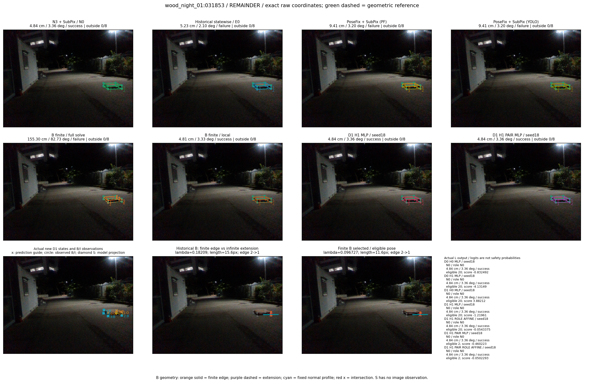

Whole-pallet pose errors; reference is a fixed geometric annotation, not certified physical GT.


Scores are uncalibrated logits. N0 retention is a numerical pose alias; it differs from H0 none or B fallback. B/I and profiles in baseline/B panels are original observations; L panels use new D1 observations. Only one deterministic supported B query is shown in a thumbnail; full support counts are below. Grey privacy rectangles edit the display copy only and are unrelated to O states; all observations were measured on original pixels. Thumbnails use JPEG quality85; detailed scientific panels are PNG.
| Method | Whole pose / cm, deg | Actual source | Selected ID | Score | Archived candidates | Eligible | N0 retained | H0 none | Fallback | Finite profiles |
|---|---|---|---|---|---|---|---|---|---|---|
| Raw YOLO + F | 149.17 cm / 81.60 deg / failure | OTHER | None | N/A | N/A | N/A | False | N/A | None | N/A |
| N3 + SubPix / N0 | 4.84 cm / 3.36 deg / success | N0 | None | N/A | N/A | N/A | True | N/A | None | N/A |
| Historical statewise / E0 | 5.23 cm / 2.10 deg / failure | E0_REGENERATED | None | N/A | N/A | N/A | False | N/A | False | N/A |
| PoseFix raw | 153.81 cm / 80.85 deg / failure | OTHER | None | N/A | N/A | N/A | False | N/A | None | N/A |
| PoseFix + SubPix (PF) | 9.41 cm / 3.20 deg / failure | OTHER | None | N/A | N/A | N/A | False | N/A | False | historical support records 9; finite audit N/A |
| PoseFix + SubPix (YOLO) | 9.41 cm / 3.20 deg / failure | OTHER | None | N/A | N/A | N/A | False | N/A | False | historical support records 9; finite audit N/A |
| Historical L, seed18 | 4.84 cm / 3.36 deg / success | N0 | N0 | N/A | 49 | 49 | True | True | True | N/A |
| Historical B fixed bank | 10.07 cm / 2.16 deg / failure | OTHER | G10/ORIGINAL_WD/sample/3 | N/A | N/A | N/A | False | N/A | False | N/A |
| Historical B full | 11.56 cm / 2.54 deg / failure | OTHER | NEW/B/ORIGINAL_WD/h0/G10/ORIGINAL_WD/sample/0/PROPOSED_NATIVE_YAW_0 | N/A | N/A | N/A | False | N/A | False | N/A |
| Historical edge full | 177.43 cm / 81.62 deg / failure | OTHER | NEW/edge/SWAPPED_WD/h0/G10/SWAPPED_WD/sample/0/PROPOSED_NATIVE_YAW_0 | N/A | N/A | N/A | False | N/A | False | N/A |
| Historical AB full | 13.79 cm / 7.22 deg / failure | OTHER | NEW/AB/SWAPPED_WD/h3/G10/ORIGINAL_WD/sample/5/PROPOSED_NATIVE_YAW_3 | N/A | N/A | N/A | False | N/A | False | N/A |
| B finite / fixed bank | 10.07 cm / 2.16 deg / failure | OTHER | G10/ORIGINAL_WD/sample/3 | N/A | N/A | N/A | False | N/A | False | 3/3 |
| B finite / full solve | 155.30 cm / 82.73 deg / failure | OTHER | NEW_FINITE/B/SWAPPED_WD/h0/G10/SWAPPED_WD/sample/0/PROPOSED_NATIVE_YAW_0 | N/A | N/A | N/A | False | N/A | False | 3/3 |
| B finite / local | 4.81 cm / 3.33 deg / success | OTHER | NEW_FINITE/B/ORIGINAL_WD/h0/N0_LOCAL_SAME_PHYSICAL_POSE/ORIGINAL_WD | N/A | N/A | N/A | False | N/A | False | 3/3 |
| Edge finite / full solve | 165.72 cm / 82.45 deg / failure | OTHER | NEW_FINITE/edge/SWAPPED_WD/h0/G10/SWAPPED_WD/sample/0/PROPOSED_NATIVE_YAW_0 | N/A | N/A | N/A | False | N/A | False | 3/3 |
| D0 H0 MLP / seed18 | 4.84 cm / 3.36 deg / success | N0 | N0 | -0.8324923515319824 | 20 | 20 | True | True | True | N/A |
| D0 H0 MLP / seed19 | 4.84 cm / 3.36 deg / success | N0 | N0 | 0.3487928509712219 | 20 | 20 | True | True | True | N/A |
| D0 H0 MLP / seed20 | 4.84 cm / 3.36 deg / success | N0 | N0 | -1.1094666719436646 | 20 | 20 | True | True | True | N/A |
| D0 H1 MLP / seed18 | 4.84 cm / 3.36 deg / success | N0 | N0 | -4.13149356842041 | 20 | 20 | True | False | False | N/A |
| D0 H1 MLP / seed19 | 4.84 cm / 3.36 deg / success | N0 | N0 | -4.71521520614624 | 20 | 20 | True | False | False | N/A |
| D0 H1 MLP / seed20 | 4.84 cm / 3.36 deg / success | N0 | N0 | -4.392583847045898 | 20 | 20 | True | False | False | N/A |
| D1 H0 MLP / seed18 | 4.84 cm / 3.36 deg / success | N0 | N0 | 3.8821187019348145 | 20 | 20 | True | True | True | N/A |
| D1 H0 MLP / seed19 | 4.84 cm / 3.36 deg / success | N0 | N0 | 4.087448596954346 | 20 | 20 | True | True | True | N/A |
| D1 H0 MLP / seed20 | 4.84 cm / 3.36 deg / success | N0 | N0 | 3.660513401031494 | 20 | 20 | True | True | True | N/A |
| D1 H1 MLP / seed18 | 4.84 cm / 3.36 deg / success | N0 | N0 | -1.2196100950241089 | 20 | 20 | True | False | False | N/A |
| D1 H1 MLP / seed19 | 4.84 cm / 3.36 deg / success | N0 | N0 | -1.1690768003463745 | 20 | 20 | True | False | False | N/A |
| D1 H1 MLP / seed20 | 4.84 cm / 3.36 deg / success | N0 | N0 | -0.9032224416732788 | 20 | 20 | True | False | False | N/A |
| D1 H1 ROLE AFFINE / seed18 | 4.84 cm / 3.36 deg / success | N0 | N0 | -0.054337479174137115 | 20 | 20 | True | False | False | N/A |
| D1 H1 ROLE AFFINE / seed19 | 4.84 cm / 3.36 deg / success | N0 | N0 | -0.2640039920806885 | 20 | 20 | True | False | False | N/A |
| D1 H1 ROLE AFFINE / seed20 | 4.84 cm / 3.36 deg / success | N0 | N0 | -0.08799983561038971 | 20 | 20 | True | False | False | N/A |
| D1 H1 PAIR MLP / seed18 | 4.84 cm / 3.36 deg / success | N0 | N0 | -0.46022260189056396 | 20 | 2 | True | False | False | N/A |
| D1 H1 PAIR MLP / seed19 | 4.84 cm / 3.36 deg / success | N0 | N0 | -0.6744239330291748 | 20 | 2 | True | False | False | N/A |
| D1 H1 PAIR MLP / seed20 | 4.84 cm / 3.36 deg / success | N0 | N0 | -0.5008031129837036 | 20 | 2 | True | False | False | N/A |
| D1 H1 PAIR ROLE AFFINE / seed18 | 4.84 cm / 3.36 deg / success | N0 | N0 | -0.0502292774617672 | 20 | 2 | True | False | False | N/A |
| D1 H1 PAIR ROLE AFFINE / seed19 | 4.84 cm / 3.36 deg / success | N0 | N0 | -0.28006699681282043 | 20 | 2 | True | False | False | N/A |
| D1 H1 PAIR ROLE AFFINE / seed20 | 4.84 cm / 3.36 deg / success | N0 | N0 | -0.0702362060546875 | 20 | 2 | True | False | False | N/A |
| Regenerated common E0 | 5.23 cm / 2.10 deg / failure | E0_REGENERATED | E0_REGENERATED | N/A | N/A | N/A | False | N/A | False | N/A |